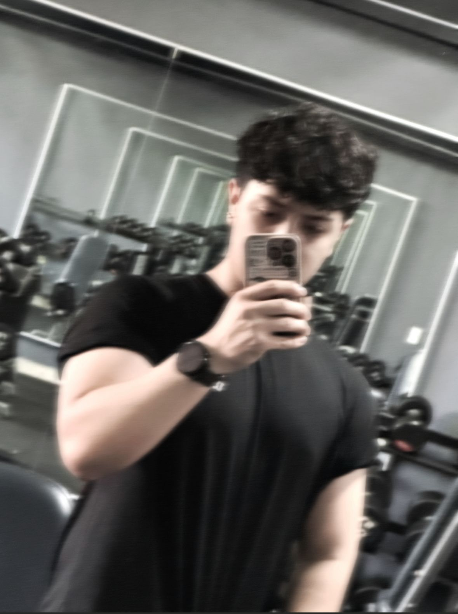
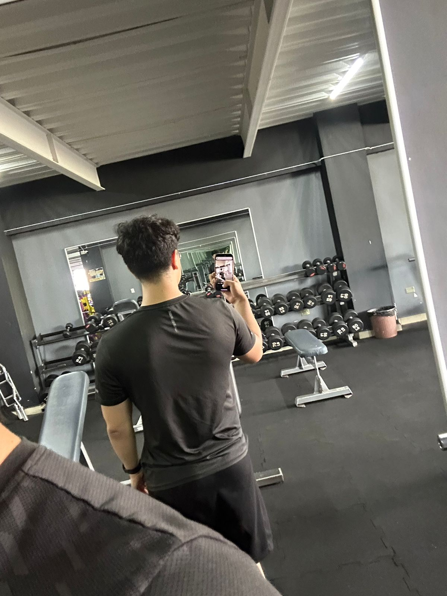
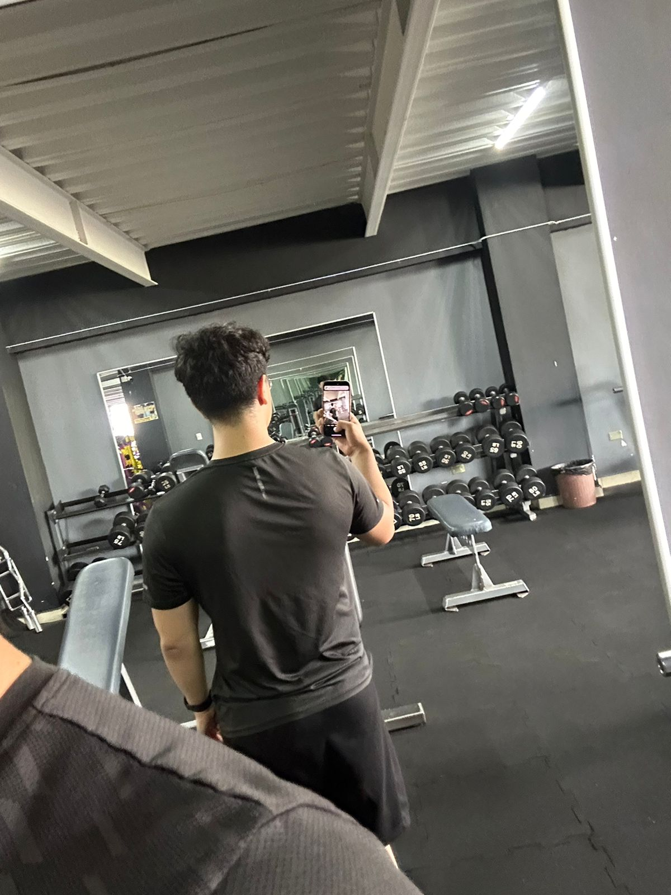

Entrenar
Me gusta ir a entrenar, lo considero una parte fundamental en mi dia a dia debido a que me ayuda a ser mas saludable tanto fisicamente como mentalmente, puede ayudar como terapia cuando hay momentos dificil y hay que superarlos.
Me gusta ir a entrenar, lo considero una parte fundamental en mi dia a dia debido a que me ayuda a ser mas saludable tanto fisicamente como mentalmente, puede ayudar como terapia cuando hay momentos dificil y hay que superarlos.
